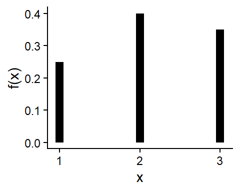

3 Discrete Probability Distributions
3.1 Probability distribution of Discrete r.v: Probability mass function (PMF)
Suppose \(X\) is a discrete random variable. The probability mass function (PMF) of \(X\) can be denoted as \(f(x)\) where
\[ f(x)=P(X=x) \]For each possible outcome \(x\) ; \(f(x)\) must satisfies:
\[f(x) \ge 0\]
\[\sum _x f(x)=1\]
The PMF \(f(x)\) is also called probability distribution of the discrte random variable \(X\).
3.2 Mean, Variance and Standard deviation of discrete r.v
(a) The expected value of \(X\) the mean of \(X\) is denoted by \(E(X)\) and defined by:
\[ E(X)=\sum_x x.f(x) \tag{3.1}\]
The expected value of \(X\) is sometimes called the population mean of \(X\) that is \(\mu=E(X)\).
(b) The variance of \(X\) is
\[Var(X)=\sigma^2 =E[(X-\mu)^2]=\sum_x (x-\mu)^2 f(x)\]Alternative:
\[Var (X)=E(X^2)-\mu^2 \tag{3.2}\] Where,
\[E(X^2)=\sum_{x} x^2.f(x)\]
Problem 3.1: Consider the following probability distribution of discrete r.v \(X\).
| \(x\) | 1 | 2 | 3 |
| \(f(x)\) | 0.25 | 0.40 | 0.35 |
Compute \(E(X)\), \(Var(X)\) and \(SD(X)\).
Solution:
Mean or Expected value of \(X\):
\[
\mu= E(X)=\sum _{x=1}^3 x\cdot f(x)=1\times 0.25+2\times 0.40+3\times 0.35=2.1
\]
Variance of \(X\): \[ \sigma^2 =E(X^2)-\mu^2=\sum_{x=0}^3 x^2 \cdot f(x)-\mu^2 \]
\[ =[1^2 \times0.25+2^2\times 0.40+3^2\times 0.35]-(2.1)^2=5-4.41=0.59 \]
Standard deviation of \(X\):
\(SD(X)=\sigma =\sqrt {0.59}=0.7681\)
Note: \(E(X)\) measures the center of the distribution and \(SD(X)\) measures the spread of the distribution around the mean.
3.3 Properties of E(.) and Var(.)
If \(a\) and \(b\) are constants, then
a) \(E(b)=b\)
b) \(E(aX+b)=aE(X)+b\)
c) \(Var(b)=0\)
d) \(Var(aX+b)=a^2 \ \ Var (X)\)
Exercises 3.1 :
- Let the random variable \(X\) represent the number of defective parts for a machine when 3 parts are sampled from a production line and tested. The following is the probability distribution of \(X\).
| \(x\) | 0 | 1 | 2 | 3 |
| \(f(x)\) | 0.51 | 0.38 | 0.10 | 0.01 |
Calculate average and standard deviation of number of defective parts.
A chemical supply company ships a certain solvent in 10-gallon drums. Let X represent the number of drums ordered by a randomly chosen customer. Assume X has the following probability mass function:
\(x\) 1 2 3 4 5 \(f(x)\) 0.4 0.2 0.2 0.1 0.1 a. Find the mean number of drums ordered.
b. Find the variance of the number of drums ordered.
c. Find the standard deviation of the number of drums ordered.
d. Let Y be the number of gallons ordered. Find the probability mass function of Y .
e. Find the mean number of gallons ordered.
f. Find the variance of the number of gallons ordered.
g. Find the standard deviation of the number of gallons ordered.
3.4 Binomial distribution
Let \(X\) be the number of “successes” in \(n\) independent Bernoulli trial (a trial which has TWO outcomes-success or failure).
Assume \(Pr(success)=p \ \ (say)\) remains constant from trial to trial. Then the PMF of \(X\) is:
PMF:
\[ P(X=x)=f(x)=\binom{n}{x}p^x (1-p)^{n-x} \ \ ; \ \ x=0,1,...,n \]
We often use \(q=1-p\).
With,
\(\sum_{x=0}^n f(x)=1\)
Mean: \(\mu=E(X)=np\)
Variance: \(\sigma^2=npq=np(1-p)\)
Example: For \(n=3\) and \(p=0.60\) the binomial probabilities are:
\(P(X=0)=f(0)=\binom{3}{0}(0.60)^0 (0.40)^{3-0}=0.064\)
\(P(X=1)=f(1)=\binom{3}{1}(0.60)^1 (0.40)^{3-1}=0.288\)
\(P(X=2)=f(2)=\binom{3}{2}(0.60)^2 (0.40)^{3-2}=0.432\)
\(P(X=3)=f(3)=\binom{3}{3}(0.60)^3 (0.40)^{3-3}=0.216\)
AND,
\[ \mathrm{Mean} , \mu=E(X)=np=3\times 0.6=1.8 \]
\[ \mathrm{Variance} , \sigma^2 =npq=3\times0.60\times0.40=0.72 \]
\[ SD(X), \sigma =\sqrt {0.72} \approx 0.85 \]
Problem 3.2: Let \(X \sim \text{Bin}(8, 0.4)\). Find
- \(P(X = 2)\)
- \(P(X = 4)\)
- \(P(X < 2)\)
- \(P(X > 6)\)
- \(\mu_X\)
- \(\sigma_X^2\)
Problem 3.3: A large industrial firm allows a discount on any invoice that is paid within 30 days. Of all invoices, 10% receive the discount. In a company audit, 12 invoices are sampled at random.
(a). What is the probability that fewer than 4 of the 12 sampled invoices receive the discount?
(b). What is the probability that more than 1 of the 12 sampled invoices receives a discount?
Problem 3.4: Of all the weld failures in a certain assembly, 85% of them occur in the weld metal itself, and the remaining 15% occur in the base metal. A sample of 20 weld failures is examined.
(a). What is the probability that exactly five of them are base metal failures?
(b). What is the probability that fewer than four of them are base metal failures?
(c). What is the probability that none of them are base metal failures?
Problem 3.5: Of the items manufactured by a certain process, 20% are defective. Of the defective items, 60% can be repaired.
(a). Find the probability that a randomly chosen item is defective and cannot be repaired.
(b). Find the probability that exactly 2 of 20 randomly chosen items are defective and cannot be repaired.
NoteDistribution of sample proportion (\(\hat p\))
In many situations the success probability \(p\) associated with a certain Bernoulli trial remains unknown, and we have to estimate its value. A simple way to do this is to conduct n independent trials and count the number \(X\) of successes. To estimate the success probability \(p\) we compute the sample proportion \(\hat p\).
\[ \hat p=\frac{\mathrm{number \ \ of \ \ successes}}{\mathrm{number \ \ of \ \ trials}}=\frac{X}{n} \] So,
\(E(\hat p)=p\)
\(Var(\hat p)=\frac{p(1-p)}{n}\)
\(SD(\hat p)=\sqrt{\frac{p(1-p)}{n}}\)
We will use this concept in upcoming Chapter of Statistical Quality Control (SQC) for control charts of Fraction-Defective.
3.5 Poisson distribution
Suppose \(X\) be the number occurrences in a given interval and
\(\mu\) is the expected value or mean number of occurrences/rate of occurrences in an interval. Then PMF of \(X\) is:
PMF:
\[ P(X=x)=\frac{e^{-\mu}\mu^x}{x!} \ \ ; \ \ x=0,1,...,\infty \]
With,
\(\sum_{x=0}^{\infty} f(x)=1\)
Mean, \(E(X)=\mu\)
Variance, \(Var(X)=\sigma^2=\mu\)
We write, \(X\sim Pois(\mu)\)
Problem 3.6: Let \(X \sim Pois(4)\). Find
a. P(X = 1)
b. P(X = 0)
c. P(X < 2)
d. P(X > 1)
e. \(\mu_X\)
f. \(\sigma_X\)
Problem 3.7: A local drugstore owner knows that, on average, 100 people enter his store each hour.
(a) Find the probability that in a given 3-minute period nobody enters the store.
(b) Find the probability that in a given 5-minute period more than 2 people enter the store.
Problem 3.8: While inspecting a fabric in a continuous roll, the mean number of defects per meter is 0.25. Determine the probability that 10 m length of fabric will contain (a) 0, (b) 1, (c) 2, (d) less than or equal to 2 defects.
Problem 3.9: A roll of fabric contains on an average 5 defects scattered at random in 100 \(m^2\). Pieces of fabric, 5 m by 2 m, are cut from the roll. Determine the probability that
(a) a piece contains no defects;
(b) a piece will contain more than one defects;
(c) a piece will contain fewer than two defects;
(d) five pieces selected at random will all be free from defects.